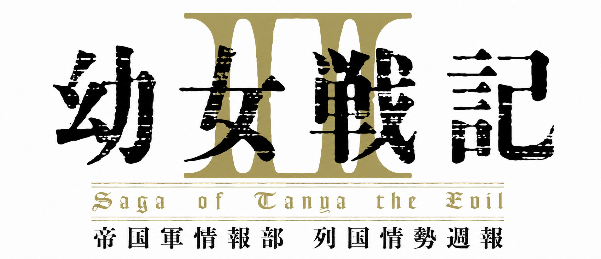

戦術・史実との対応・人物関係を、視聴しながら整理していくための個人ノートです。
📚 用語集
🧑🤝🧑 人物相関図
🌍 国家・勢力対応表
話数別 解説
第1話
東部戦線配属回。戦闘団の運用、凡将たちとの対比、委任戦術など
第2話
帝国の窮状と捕虜尋問。ナショナリズムという本当の敵の正体、ゼートゥーアの民政移管宣言
第3話
イルドアの仲介と無賠償・無割譲講和の白紙化。カランドロという軍人政治家、国際法ギリギリの爆撃、凸凹の戦線